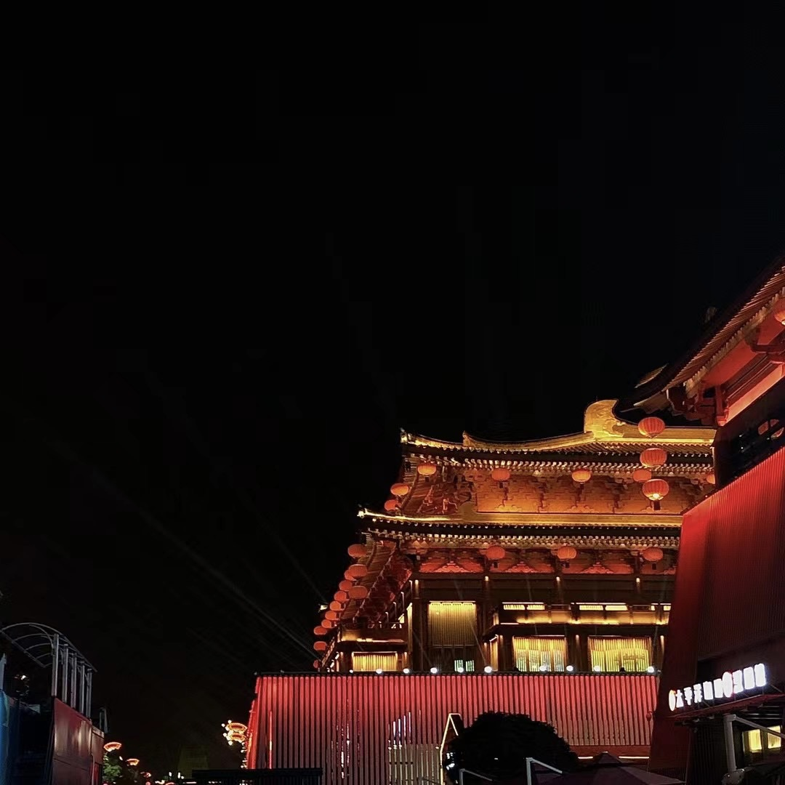
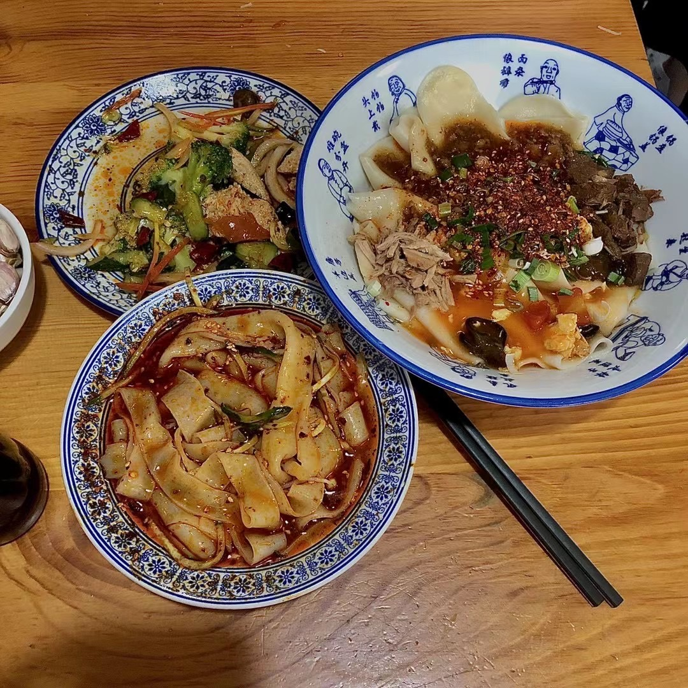
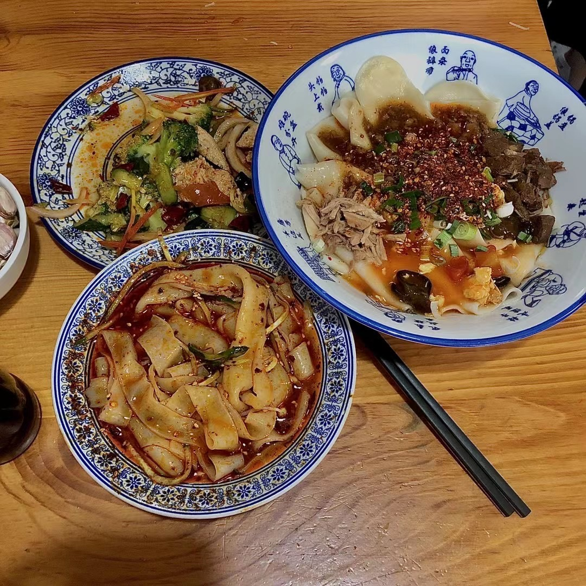
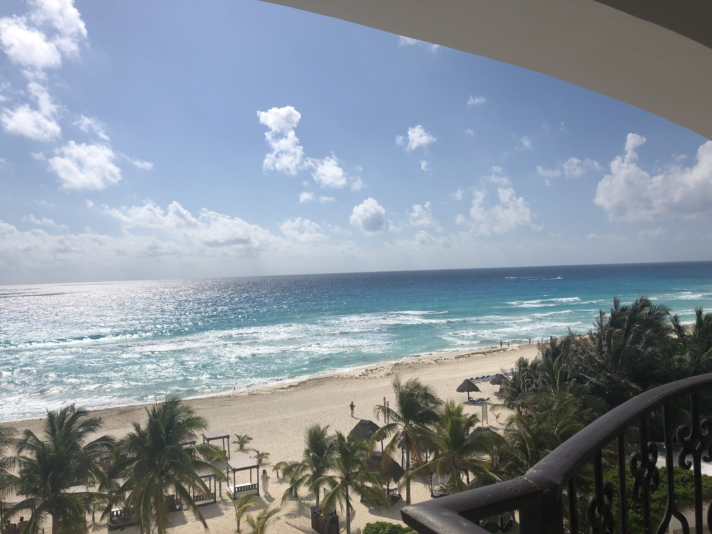
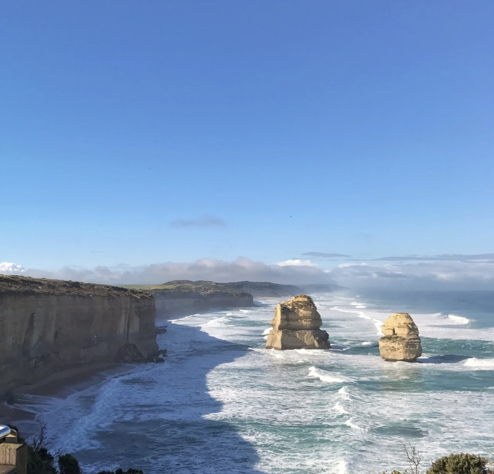
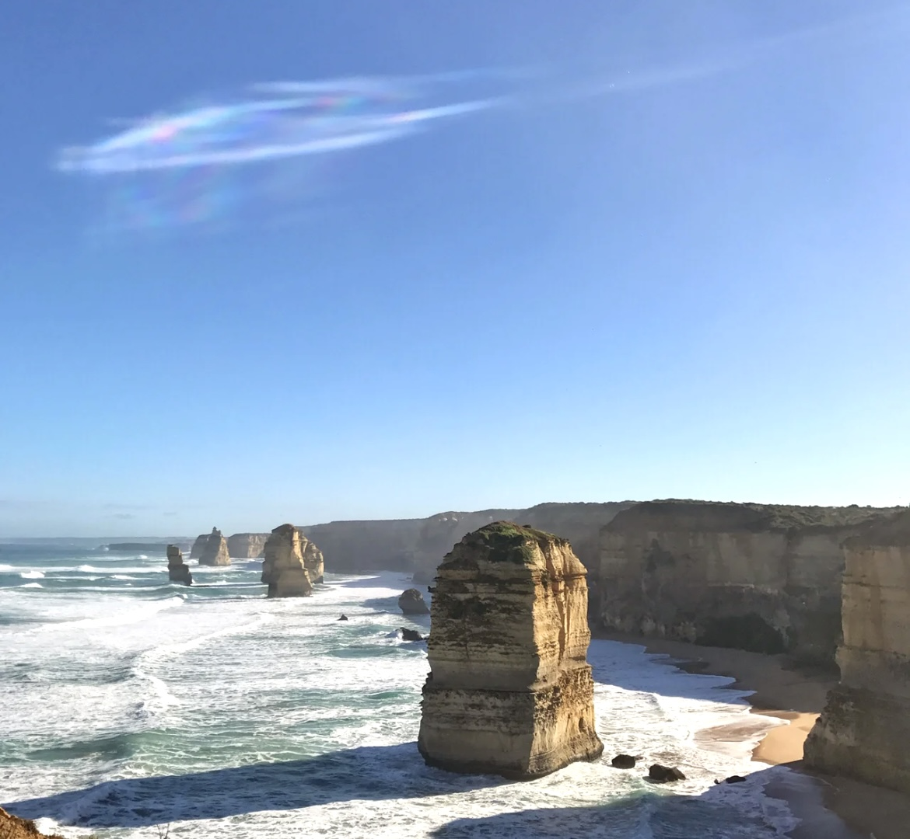

Asia
My Hometown, Fuzhou
My hometown Fuzhou is the capital of Fujian Province. It is located in the south east of China, right across to Taiwan. Because banyan trees were planted all over the city 900 years ago, it is also known as the "banyan city". Fuzhou is surrounded by mountains and rivers, with evergreen trees and a warm and humid subtropical marine climate. The resident population is about 8.29 million.
Xi'an
 

Xi'an is a city with a long history. There are many ancient buildings there, full of traditional Chinese style.
America
Mexico
Cancun, is a city in mexico. It is my best vocation choice.
Australia
Australia
 Great ocean road in Australia